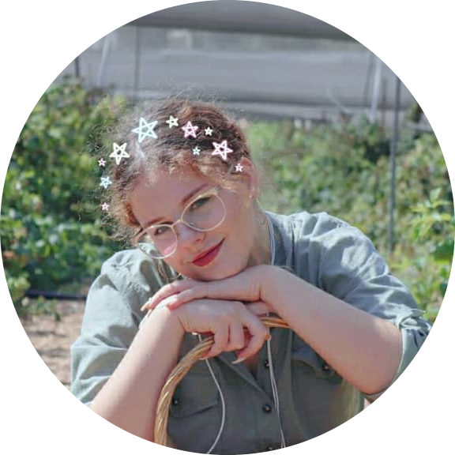

|  |
Mariya VolovikFullstack Dev student, hopefully I'll get the hang of this soon. 19, female, so far I have no idea what I'm doing. Beware, as quick of a learner I am, I'm as lazy. |
| Dates | Places of Education |
|---|---|
| 2007-2013 | Yad-Mordechai Elementary School |
| 2013-2016 | Tichon Hadash Darca Middle School |
| 2016-2019 | Tichon Hadash Darca High School |
| 2017 | Weizmann Institute of Science, "Alpha" Course |
| 2018 | Shenkar College, "Nizanei Shenkar" Course |
I'm into sports, mostly volleyball, because it gives me the rush of adrenaline and sense of achievment that I need to keep on thriving as an individual in any setting.
My goals however, mainly consist of living comfortably not with the use of "mentality" or "mindset". I believe that I can achieve total comfort in life with money. That's why I became interested in being a developer- the paycheks are high and
no physical work is required.
|
|